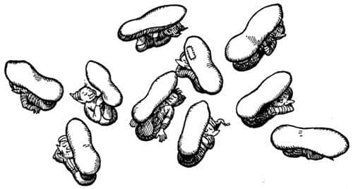
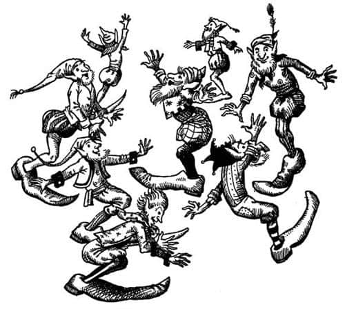

Tekkafalar Mutlu
Lucy koridora çıkarak Aslan’ı takip etti ve o sırada kırmızı bir elbise giymiş, ayakları çıplak, yaşlı bir adamın onlara doğru geldiğini gördü. Beyaz saçlarında meşe yapraklarından bir taç vardı, sakalı beline iniyordu ve oymalı bir bastondan destek alıyordu. Aslan’ı gördüğü zaman yerlere kadar eğildi ve:
“Evlerinizin en değersizine hoş geldiniz, Efendimiz” dedi.
“Kullarına hükmetmekten usandın mı Coriakin?”
“Hayır” dedi büyücü, “çok aptallar ama gerçekte zararsızlar. Bu yaratıkları sevmeye başladım. Belki de büyü yerine akılla yönetilebilecekleri günü beklemekte biraz sabırsızım.”
“Zamanı gelince Coriakin” dedi Aslan.
“Evet, zamanı gelince, efendim” diye cevapladı. “Kendinizi onlara göstermeye niyetiniz var mı?”
“Yok” dedi Aslan, gülme anlamına gelen (Lucy böyle düşünüyordu) yarım bir hırıltıyla. “Bu onların aklını başından alır. Senin halkın olgunlaşana kadar birçok yıldız yaşlanıp adalarda dinlenmeye gelecek. Bugün gün batmadan önce, Cair Paravel’deki kalede efendisi Caspian’ın geri döneceği günü bekleyen Cüce Yaygaracı’yı ziyaret etmem gerekiyor. Hikâyenizi ona anlatacağım Lucy. Üzülme. Yakında görüşeceğiz.”
“Aslan, lütfen” dedi Lucy, “senin yakın dediğin nedir?”
“Ben bütün zamana yakın derim” dedi Aslan ve aniden kayboldu. Lucy büyücüyle yalnız kalmıştı.
“Gitti!” dedi büyücü. “İkimiz de üzgünüz. Her zaman böyledir, onu tutamazsın; o evcil bir aslan değil ki. Kitabımı beğendin mi?”
“Bazı bölümlerini gerçekten çok beğendim” dedi Lucy. “Orada olduğumu biliyor muydun?”
“Kalınkafalara kendilerini görünmez yapmaları için izin verdiğimde, senin büyüyü bozmaya geleceğini biliyordum. Gününden pek emin değildim. Bu sabah geleceğini düşünmemiştim açıkçası. Anlarsın, beni de görünmez yaptılar ve görünmez olmak her zaman uykumu getirir. Aman, işte yine esniyorum. Karnın aç mı?”
“Şey, belki biraz” dedi Lucy. “Saatin kaç olduğundan haberim yok.”
“Gel” dedi büyücü. “Aslan için tüm zamanlar yakın olabilir, ama benim evimde acıktığın zaman saat birdir.”
Büyücü koridorda ilerledi ve bir kapıyı açtı. İçeriye girdiğinde Lucy kendisini günışığı ve çiçeklerle dolu bir odada buldu. Girdiklerinde masa bomboştu, ama elbette bu büyülü bir masaydı ve yaşlı adamın bir sözüyle masa örtüsü, çatallar, bıçaklar, tabaklar, bardaklar ve yemekler ortaya çıktı.
“Umarım seversin” dedi. “Son zamanlarda yediklerinden değil. Kendi ülkendekilere benzeyen yemekler vermeye çalıştım sana.”
“Harika” dedi Lucy, yemekler gerçekten harikaydı; ateş gibi sıcak bir omlet, soğuk kuzu ve taze bezelye, çilekli dondurma, limonata ve sonunda bir bardak kakao. Büyücü sadece şarap ve ekmek yedi. Büyücünün korkutucu bir hali yoktu ve az sonra o ve Lucy sanki eski dostlarmış gibi sohbete dalmışlardı.
“Büyü ne zaman kalkacak?” diye sordu Lucy. Kalınkafalar yine görünür olacak mı?”
“Ah, evet, şimdi görünür durumdalar. Muhtemelen hâlâ uyuyorlar; gün ortasında hep dinlenirler.”
“Peki artık görünür olduklarına göre çirkinlikten kurtaracak mısın onları? Eski hallerine getirecek misin?”
“Şey, bu oldukça hassas bir konu” dedi büyücü. “Görüyorsun, önceden güzel göründüklerini düşünen sadece kendileriydi. Çirkinleştirildiklerini söylüyorlar, ama ben öyle düşünmüyorum. Birçok insan değişikliğin iyiye doğru olduğunu söyleyebilir.”
“Çok mu kibirliler?”
“Evet. Ya da en azından Reis Kalınkafa kibirli ve geri kalan herkese de öyle olmayı öğretti. Onun söylediği her söze inanırlar.”
“Bunu fark etmiştik” dedi Lucy.
“Evet… bir bakıma onsuz daha iyi olurduk. Onu başka bir şeye dönüştürebilirim aslında ya da onları Reis’in tek sözüne bile inanmayacak şekilde büyüleyebilirim. Ama bunu yapmak istemem. Ona hayran olmaları, hiçbir şeye hayran olmamalarından iyidir.”
“Seni beğenmiyorlar mı?” diye sordu Lucy.
“Aaa, beni mi?” dedi büyücü, “beni beğenmezler.”
“Onları niçin çirkinleştirdin… yani niye onların çirkinleştirdi dediği şeyi yaptın?”
“Şey, emirlere itaat etmiyorlardı. İşleri, bahçeye bakmak ve yiyecekleri yetiştirmekti ve bu işleri (düşündüklerinin aksine) benim için değil, kendileri için yapıyorlardı. Zorlamasam bunu yapmayacaklardı. Bahçeyi sulamaktan ne çıkar? Tepede yaklaşık yarım mil uzakta güzel bir pınar var. O pınardan kaynayan dere hemen bahçenin yanından geçer. Tüm yaptığım, günde iki ya da üç kere tepeye tırmanmalarının gereksiz olduğunu, suyu dereden almalarını söylemekti. Zaten tepeden inerken kovalardaki suyun yarısını döküyorlardı. Dinlemek istemediler. Sonunda düpedüz isyan ettiler.”
“O kadar mı aptallar?” diye sordu Lucy.
Büyücü iç geçirdi. “Onların yüzünden çektiğim sıkıntılara inanmazsın. Birkaç ay önce tabakları ve bıçakları akşam yemeğinden önce yıkamak istediler; yemekten sonra vakit kaybettirdiğini söylüyorlardı. Hasat zamanı kolay olsun diye kaynamış patates ekerken yakaladım onları. Bir gün kedi süthaneye girmişti ve bunların yirmisi sütü dışarıya taşımakla uğraşıyordu; kimse kediyi dışarı çıkarmayı akıl etmemişti. Neyse yemeğin bitmiş. Artık onları görebileceğimize göre gidip Kalınkafalara bakalım.”
Ne işe yaradığı anlaşılmayan cilalı aletlerle – usturlaplar, kronoskoplar, koriyambuslar ve teodolintler – dolu başka bir odaya gittiler ve burada pencereye yaklaştıklarında büyücü, “İşte, işte Kalınkafalar” dedi.
“Ben kimseyi görmüyorum” dedi Lucy. “Şu mantara benzeyen şeyler nedir?”
İşaret ettiği şeyler tüm çimliğe dağılmıştı. Gerçekten de mantara benziyorlardı ama çok büyüklerdi; sapları ve şemsiyelerinin çapı yaklaşık bir metreydi. Dikkatle baktığında sapların şemsiyeye ortadan değil, dengesiz bir görünüm verecek şekilde, kenardan bitiştiğini gördü. Her sapın dibinde yatan – küçük bir bohçaya benzeyen – bir şeyler vardı. Uzun uzun baktı, artık mantar gibi görünmüyorlardı. Şemsiye kısımları, ilk gördüğünde sandığı gibi yuvarlak değildi. Geniş olmaktan çok, uzundu ve bir tarafı dışa doğru genişliyordu. Bir sürü, belki de elliden fazlası vardı orada.

Saat üçü vurdu.
Tam o anda olağanüstü bir şey oldu. Mantarların her biri baş aşağı döndü. Sapların dibinde uzanan küçük bohçalar kafalar ve vücutlardı, saplarsa ayaklar. Ama vücutların iki ayağı yoktu. Her vücudun tam altında tek bir kalın bacak vardı (ama tek bacaklı bir adamın bacağı gibi bir yanda değildi) ve bacağın ucunda da tek bir kocaman ayak. Bu geniş, taraklı bir ayaktı ve parmakları yukarıya doğru kalkıktı, bundan dolayı küçük bir kano gibi görünüyordu. Az sonra onların neden mantar gibi göründüklerini anladı. Tek bacakları havadaydı ve kocaman ayakları üzerlerini örtecek şekilde sırtüstü uzanmışlardı. Daha sonra bunun, onların normal dinlenme biçimi olduğunu öğrendi; çünkü ayakları onları yağmur ve güneşten koruyordu ve bir Tekayağın ayağının altında yatması, onun için çadırda olmak kadar güzeldi.
“Ah, çok komik, çok komik” diye bağırdı Lucy, gülmekten patlayarak. “Onları bu hale sen mi getirdin?”
“Evet, evet. Kalınkafaların hepsini Tekayak yaptım” dedi büyücü. O da gözünden yaş gelene kadar gülmüştü. “Seyret şimdi” diye ekledi.
Seyretmeye değerdi. Kuşkusuz bu tek bacaklı küçük adamlar bizim gibi yürüyüp koşamıyordu. Pireler ya da kurbağalar gibi sıçrayarak ilerliyorlardı. Öyle bir zıplıyorlardı ki!.. Sanki her büyük ayak bir yay grubu gibiydi. Yere öyle bir hareketle konuyorlardı ki, işte dün Lucy’yi şaşırtan gümleme sesleri böyle çıkıyordu. Artık her yöne sıçrıyorlar ve birbirlerine sesleniyorlardı, “Hey, arkadaşlar! Tekrar görünür duruma geldik.”

“Evet, görünüyoruz” dedi, püsküllü, kırmızı bir külah giyen ve Tekayakların Reisi olduğu anlaşılan birisi. “Bence, insanlar birbirlerini görebilirlerse, görünürler de.”
“Ah, işte, işte Reis” diye bağırdı diğerleri. “İşte asıl nokta bu. Kimsenin aklı seninkinden daha berrak çalışmıyordur. Bundan daha yalın söyleyemezdin.”
“Yaşlı adamı uyurken yakaladı o küçük kız” dedi Tekayakların Reisi. “Bu kez onu yendik.”
“Lafı ağzımızdan aldın” dedi koro ahenkle. “Bugün her zamankinden çok daha iyisin Reis. Devam et, devam et.”
“Peki senin hakkında böyle konuşmaya nasıl cesaret ediyorlar?” dedi Lucy. “Dün senden korkuyormuş gibi görünüyorlardı. Senin dinliyor olabileceğini bilmiyorlar mı?”
“Kalınkafaların garipliklerinden birisi bu” dedi büyücü. “Bir an, sanki her şeyi ben idare ediyormuşum, her şeyi duyuyormuşum ve aşırı tehlikeliymişim gibi konuşurlar, sonra da bir bebeğin bile görebileceği hilelerle beni aldatmaya çalışırlar. Tanrı akıl fikir versin.”
“Eski biçimlerine dönmek zorundalar mı?” diye sordu Lucy. “Oldukları gibi bırakmanın incitici olmayacağını umuyorum. Gerçekten çok alınıyorlar mı? Oldukça mutlu görünüyorlar. Şu sıçrayışa bak. Daha önce neye benziyorlardı?”
“Sıradan küçük cücelerdi” dedi büyücü. “Narnia’daki gibi hoş cüceler değillerdi.”
“Onları eski durumlarına dönüştürmek yazık olur” dedi Lucy. “Öyle tuhaf bir halleri var ki; oldukça da nazikler. Sence bunu söylemek fikirlerini değiştirir mi?”
“Eminim değiştirir, tabii kafalarına sokabilirsen.”
“Benimle gelip dener misin?”
“Hayır, hayır. Sen bensiz çok daha iyi yaparsın.”
“Yemek için çok çok teşekkürler” dedi Lucy ve çabucak uzaklaştı. O sabah kaygıyla çıktığı merdivenlerden koşarak indi ve aşağıda Edmund’a çarptı. Herkes Edmund’la beraber bekliyordu ve endişeli yüzlerini görüp ne kadar uzun süredir onları düşünmediğini fark edince Lucy’nin vicdanı sızladı.
“İyiyim” diye bağırdı, “her şey tamam. Büyücü iyi biri ve onu gördüm, Aslan’ı.”
Bunları söyledikten sonra rüzgâr gibi önlerinden geçip bahçeye çıktı. Orada Tekayakların sıçramalarından yer sarsılıyor, bağırışları havada çınlıyordu. Lucy’yi gördüklerinde sarsıntı ve bağırışlar iki misline çıktı.
“İşte geliyor, işte geliyor” diye bağırdılar. “Küçük kıza üç hurra. Ah! Yaşlı beyefendiyi esaslı bir şekilde kandırdı, evet.”
“Bizler” dedi Tekayakların Reisi, “bizi çirkinleştirilmeden önceki gibi görme zevkini sana tattıramadığımız için çok üzgünüz, çünkü aradaki farka inanamazsın. İşte gerçek ortada, artık çok çirkin olduğumuzu inkâr edemeyiz, onun için de seni aldatamayız.”
“Evet, çirkiniz Reis, çirkiniz” diye yankılandı top gibi zıplayan diğerlerinin sesi. “Doğru söyledin, doğru söyledin.”
“Aslında ben hiç de çirkin olmadığınızı düşünüyorum” dedi Lucy, sesini duyurabilmek için bağırarak konuşuyordu. “Bence çok hoş görünüyorsunuz.”
“Dinleyin onu, dinleyin onu” dedi Tekayaklar. “Haklısınız Bayan. Çok hoş görünüyoruz. Bizden daha yakışıklı bir grup bulamazsın.” Bunu hiç şaşkınlığa düşmeden söylemişlerdi ve fikirlerini değiştirdiklerini fark etmemiş görünüyorlardı.
“Çirkinleştirilmeden önce nasıl güzel göründüğümüzü” dedi Tekayakların Reisi, “anlatmak istiyor.”
“Haklısın Reis, haklısın” dedi diğerleri monoton bir sesle. “Söylediği şey bu. Onu kulaklarımızla duyduk.”
“Öyle demedim” diye haykırdı Lucy. “Şu an çok hoş olduğunuzu söyledim.”
“Öyle dedi, öyle dedi” dedi Tekayakların Reisi, “o zamanlar çok hoş olduğumuzu söyledi.”
“İkisini de dinleyin, ikisini de dinleyin” dedi Tekayaklar. “İşte size bir çift. Her zaman haklılar. Daha iyisini söyleyemezlerdi.”
“Ama biz tamamen zıt şeyler söylüyoruz” dedi Lucy, ayağını sabırsızlıkla yere vurarak.
“Öyle diyorsunuz, eminiz öyle diyorsunuz” dedi Tekayaklar. “Zıtlık gibi bir şey yoktur. İkiniz de böyle devam edin.”
“Siz herkesi çıldırtırsınız” dedi Lucy ve vazgeçti. Ancak Tekayaklar hallerinden hoşnut görünüyorlardı ve genelde konuşmanın başarılı olduğuna karar verdiler.
O akşam herkes yatmaya gitmeden önce, tek ayaklı olmaktan gurur duymalarına sebep olan başka bir şey oldu. Caspian ve diğer Narnialılar, buldukları ilk fırsatta, Şafak Yıldızı’nda kalan ve artık iyice endişelenmeye başlayan Rhince’e ve diğerlerine haber vermek için sahile inmişlerdi. Elbette Tekayaklar da top gibi sıçrayarak ve yüksek sesle birbirlerini onaylayarak onlarla gitmişlerdi. Eustace sonunda, “Keşke büyücü bunları görünmez değil, duyulmaz yapsaydı” dedi. (Sonra konuştuğuna pişman oldu, çünkü duyulmaz birinin, sesini duyamadığın biri olduğunu açıklamak zorunda kaldı ve birçok zahmete katlanmasına rağmen Tekayakların onu anladığından emin değildi. Onu asıl sinirlendiren şey, sonunda Tekayakların, “Bu çocuk hiçbir şeyi bizim Reis’in yaptığı gibi açıklayamıyor. Ama öğrenirsin delikanlı. Onu dinle. Sana nasıl söyleyeceğini öğretir. İşte sana bir konuşmacı!” demeleriydi.) Körfeze ulaştıklarında Bastıbacak’ın aklına harika bir fikir geldi. Küçük kanosunu denize indirip, Tekayaklar tüm ilgilerini ona verene dek kürek çekti. Sonra kanosunda ayağa kalkıp, “Değerli ve zeki Tekayaklar, sizin kayığa ihtiyacınız yok. Her birinizin kayık yerine geçecek bir ayağı var. Yapabildiğiniz kadar usulca suya atlayın ve ne olacağını görün.”
Tekayakların reisi geride durup diğerlerini suyun ıslak olduğu konusunda uyardı, ama bir ya da iki genç Tekayak anında bunu denedi; sonra birkaçı daha bu örneği takip etti ve sonunda hepsi suya atladı. Plan mükemmel bir biçimde işledi. Tekayakların o kocaman tek ayağı doğal bir sal ya da kayık gibiydi ve Bastıbacak onlara kürek yapmasını öğretince, körfezin her tarafında ve Şafak Yıldızı’nın etrafında, her kanonun kıçında şişko bir cücenin ayakta durduğu, küçük bir kano filosu görüntüsüyle, kürek çekmeye başladılar. Birbirleriyle yarıştılar, ödül olarak gemiden şişelerce şarap dağıtıldı ve gemiciler geminin kenarlarından eğilerek midelerine kramp girene kadar güldü.
Kalınkafalar, ne anlama geldiğini anlamasalar da muhteşem bir isim olduğunu söyledikleri yeni isimleri “Tekayak”tan da çok hoşlanmışlardı. “Biz buyuz” diye haykırıyorlardı. “Takatuk, Taktavuk, Tekayık. Tam da kendimizi böyle adlandıracaktık.” Ancak bir süre sonra her şeyi eski isimleri olan “Kalınkafa” ile karıştırdılar ve sonunda kendilerini “Tekkafa” olarak adlandırmaya karar verdiler; muhtemelen yüzyıllarca da böyle çağrılacaklar.
O akşam tüm Narnialılar yukarıda büyücü ile yemek yediler ve Lucy artık korkmadığı için her şeyin ne kadar değişik göründüğünü fark etti. Kapılardaki işaretler hâlâ esrarengizdi, ama artık neşeli bir anlamları varmış gibi görünüyordu, öyle ki sakallı ayna bile korkutucu olmaktan çok eğlendirici görünüyordu. Yemekte herkes, büyü sayesinde, en sevdiği yiyecek ve içecekleri yiyip içti ve yemekten sonra büyücü harika bir büyü yaptı. Masaya iki tane boş parşömen kâğıdı koydu ve Drinian’dan o güne kadar yaptıkları yolculuğu her ayrıntısına kadar anlatmasını istedi; Drinian konuştukça, anlattıkları, parşömenlerin üzerinde zarif ve berrak çizgiler halinde görünmeye başladı ve sonunda her iki parşömende de, Doğu Okyanusu’nun, Galma, Terebinthia, Yedi Adalar, Issız Adalar, Ejderha Adası, Yanık Ada, Ölümsuyu ve Kalınkafaların ülkesini kapsayan, bütün her yerin gerçek büyüklükte ve doğru yerde olduğu mükemmel iki haritası belirdi. Bunlar o denizlerin ilk haritalarıydı ve önceden yapılmış büyüsüz haritalardan daha iyiydiler. Çünkü bu haritalarda şehirler ve dağlar ilk önce sıradan haritalarda göründükleri gibi görünüyor, büyücünün verdiği bir büyüteçle bakıldığındaysa, gerçek şehir ve dağların mükemmel yapılmış küçük resimleri oldukları fark ediliyordu. Teleskopun ters ucundan baktığınızda gördüğünüz şeyler gibi uzakta görünüyorlardı, ama Dar Liman’daki sokakları, köle pazarını ve kaleyi net bir şekilde görebiliyordunuz. Tek sakıncası adaların çoğunluğunun sahillerinin tam çizilmemiş olmasıydı, çünkü harita Drinian’ın kendi gözleriyle gördüklerini gösteriyordu. Bitirdiklerinde, büyücü haritalardan birini kendisine sakladı ve diğerini Caspian’a hediye etti: Harita hâlâ Cair Paravel’deki alet odasında asılı durmaktadır. Ne var ki, büyücü daha doğudaki ülkeler ve denizler hakkında bir şey söyleyemedi. Bununla beraber, yaklaşık yedi yıl önce bir Narnia gemisinin bu sularda demirlediğini ve gemide Lord Revilian, Argoz, Mavramorn ve Rhoop’un hazır bulunduğunu söyledi. Böylece Ölümsuyu’nun dibinde yatarken gördükleri vücudun Lord Restimar’a ait olduğuna karar verdiler.
Ertesi gün büyücü, Şafak Yıldızı’nın Denizyılanı tarafından tahrip edilen kıç kısmını büyüyle onardı ve gemiye bir sürü faydalı şeyler yükledi. Dostça ayrıldılar ve Şafak Yıldızı öğleden sonra ikide denize açıldığında, Tekkafalar limanın ağzına kadar kürek çekerek ona eşlik edip, sesleri artık gemiden duyulmayana kadar tezahürat yaptılar.